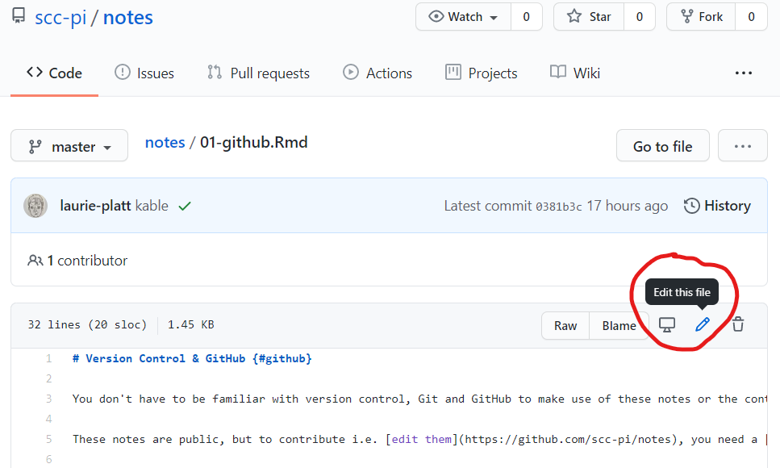

Chapter 2 Version Control & GitHub
You don’t have to be familiar with version control, Git and GitHub to make use of these notes or the contents of the scc-pi repositories. If you’re new to scripting and R, visualisations or using R Markdown are better starting points than version control.
These notes are public, but to contribute i.e. edit them, you need a GitHub account and to be granted permission by an owner of scc-pi (try Laurie first, but Giles and Anne could help too). Then you can edit directly in GitHub via your browser.

You also need a GitHub account and permission to access one of our private repositories, but not for our public repositories, to download a file, copy & paste code, or source and use a function:
# Load functions for Sheffield areas from a public scc-pi repository
source("https://raw.githubusercontent.com/scc-pi/functions/main/ShefAreas.R")
# Call one of our Sheffield area functions that returns LSOA codes
shef_lsoa_codes() %>%
head(5) %>% #only display the first 5 records
knitr::kable() #display them in a nice table ## [1] "Table"| LSOA11CD | LSOA11NM |
|---|---|
| E01008124 | Sheffield 012F |
| E01008125 | Sheffield 009G |
| E01007917 | Sheffield 071B |
| E01033273 | Sheffield 042F |
| E01007967 | Sheffield 045B |
Try raising an issue if you spot a problem, have a suggestion or a question.
2.1 Why version control?
When scripting I take a backup of a file, so if the changes I make break what I’ve previously done, I can revert to the previous version. If I’m collating contributions to a document from different people I might use their initials to indicate who’s made contributions in what version e.g. “BI_Principles-GR.docx” and “BI_Principles-NM.docx”. These are both examples of manual version control.
When we talk about version control and scripting we typically mean a version control system. A tool that assists with tracking changes to files over time and by different people. Such systems also usually include reasons for the changes, and file, or rather version, comparison functionality. So a version control system is a backup/audit trail/collaboration thing.
2.2 GIT
Git is an open-source distributed version control system for tracking changes in source code during software development.
2.3 GitHub
GitHub is a product that offers Git-based source control repositories. Other products also offer Git-based repositories, such as GitLab, BitBucket, and Azure DevOps.
Our scc-pi GitHub organisation is a free account. It has had no approval as such. If using it proves successful we will need to discuss approval with BCIS.
2.3.1 Security & data protection
Assuming that GitHub.com is hosted in the US, it will not meet our data protection obligations. Either way, we’ve not checked compliance with Information Governance, so storing PID (Person Identifiable Data), or anything commercially confidential or politically sensitive, on GitHub.com is currently a no no. As an additional precaution, any projects related to such information should be held in a private repository.
Microsoft own GitHub and GitHub Enterprise Server is the on-premises deployment of GitHub.com that could be hosted on our own Azure environment.
2.3.2 Forking and pull requests
TODO
2.3.3 Other features
GitHub now allows private repositories on free organisation accounts, but not all GitHub features are available.
The evolution of a repository is captured by commits i.e. the changes to files in the repository. However, the original issue, ideas or discussion surrounding a commit is captured in a GitHub issue. You can link a commit to an issue by including the issue number prefixed by # in the commit message.
I’ve used a GitHub project to organise the our private C19Surveillance repository as a kanban board. However, a project is not restricted to issues or a single repository.
GitHub pages and actions have been used to 4.4.1">publish these notes.
There are also other GitHub features to explore.
2.4 Git & RStudio
TODO
- SSH
- Happy Git with R